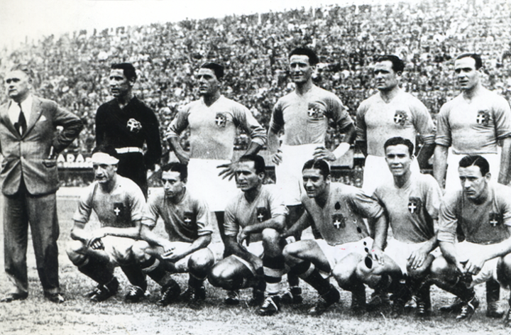

Mundial 1934
Primer título mundial
Es el año de las primeras veces para el fútbol italiano: primera participación en un campeonato del mundo, la primera vez desde que el país organizador y primer triunfo. Que lleva el Blues es una extraña pareja integrada por un funcionario de Pirelli, Vittorio Pozzo, y un general de la milicia fascista, Giorgio Vaccaro. Los dos aislar el equipo para un mes y medio, en una retirada duro, al estilo militar, la preparación, como para luchar en una guerra en lugar de enfrentarse a un evento deportivo.
La fórmula del torneo mundial ofrece el nocaut y bajo disparos de Italia caerá pronto los Estados Unidos, "enterrada" por 7 a 1. En los azules cuartas partes se encuentran con el temible España, defendida por el legendario portero Zamora, "y lo divino" , que detiene el blues en el primer partido, que terminó 1 a 1 en la prórroga, y no desmayar en la repetición de un gol de Meazza. Al margen, para el debut EIAR la Copa del Mundo, no es Nicholas Carosio que contar, con épica, en su mayoría episodios "imaginarios"; pero la televisión está lejos y para aquellos que sólo pueden oír que está bien. En las semifinales es una red de Guaita para doblar Austria.
La gran final será en el escenario en el Estadio Nacional del Partido Fascista, en Roma, en presencia de cincuenta mil espectadores: Checoslovaquia tomó la delantera con Puc menos de veinte minutos del final. Parece que la derrota y en lugar ocho minutos antes del final de los osos puede restablecer el equilibrio. Luego, en el quinto minuto de la prórroga Schiavio da Italia, el primer título mundial de su historia del fútbol. Mussolini convoca azul Palazzo Venezia todavía en el juego y se mantuvo la misma tarde de expedición general Vaccaro a campeones del mundo un sobre con el premio por la victoria: veinte mil liras.